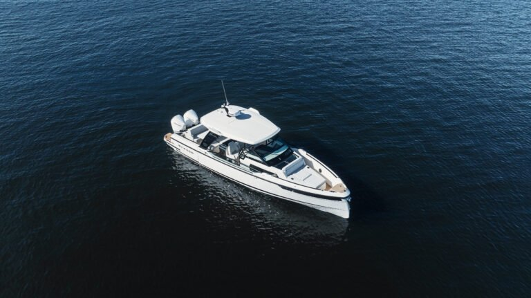

Conferences · Boat & Yacht
Paris Nautic Show 2026
- Dates
- –
- Venue
- Parc des Expositions de Paris-Le Bourget
- Location
- Paris, France
- Format
- In-person
- Category
- Boat & Yacht
- Industry
- Yachting
- Organiser
- Paris Nautic Show
- Official website
- https://www.parisnauticshow.com/
About
Revived Paris nautical salon at Le Bourget, still upcoming as of 24 Nov 2026. The official site had not published a 2027 edition on 24 Nov 2026.
Topics: boat show, yachting, marine, watersports.
No organiser attendance figure found on the official pages fetched 24 Nov 2026 for this upcoming edition. Ranked by our estimated size tier 'medium' (10,000-30,000 attendees/visits), a judgement from format, venue and scale, not an official number.
Sources
- Official — https://www.parisnauticshow.com/